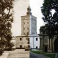
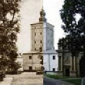
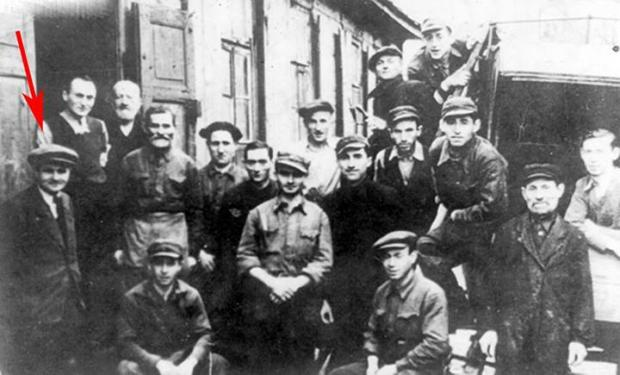

Biała Podlaska i okolice -
Copyright 2017
 

Podlasie Się Dzieje, 20 Maj 2014
FOTOGRAFIE ŻYJĄ DALEJ SWOIM ŻYCIEM, NIE UMIERAJĄ WRAZ Z ICH WŁAŚCICIELEM - WYWIAD Z ADMINISTRATORAMI PORTALU HISTORIA W ZDJĘCIACH, MARTA GADOMSKA
Link: http://podlasiesiedzieje.pl/+pxh01
Na stałe mieszkają w Stanach Zjednoczonych, ale poprzez prowadzenie profilu "Biała Podlaska i okolice -
Administratorzy facebook'owego profilu "Biała Podlaska i okolice -
Skąd wziął się pomysł na założenie profilu?
Pomysł ten „zakiełkował" w 1998 roku podczas zbierania materiałów potrzebnych do napisania pracy magisterskiej jednego z uczestników projektu. Tematem pracy była zagłada ludności żydowskiej na terenach województwa bialskopodlaskiego (www.holocaust.myoptimus.com). Tak też pozostało nam dużo niewykorzystanych materiałów w tym także zdjęć, które z racji specyfiki tematu pracy nie mogły zostać do niej dodane. Stanęliśmy, więc przed wyborem, albo materiały te wyrzucić, albo znaleźć dla nich miejsce dostępne dla wszystkich. Padło na Internet. Jeden z projektodawców portalu dorzucił pomysł, aby porównywać stare zdjęcia z nowymi w stylu «wczoraj i dziś», odnajdywać miejsca widniejące na zdjęciach itp. Tak też powstał projekt strony internetowej www.bialapodlaska.myoptimus.com, która następnie została połączona z profilem na Facebook'u przeciągu roku profil zgromadził ponad 2 tysiące fanów.
Czy spodziewaliście się tak dużego zainteresowania?
Początkowo nie przewidywaliśmy, że zainteresowanie naszym profilem będzie tak duże. Strona skierowana jest głównie do osób interesujących się historią a w szczególności historią regionu bialskopodlaskiego. Jesteśmy więc mile zaskoczeni, że tematyka zawarta na stronach portalu spotkała się z tak dużą reakcją szczególnie wśród młodzieży. Według danych statystycznych Facebook'a naszą stronę jak dotychczas wizytowali mieszkańcy 776 miast ze 137 krajów w następujących grupach wiekowych: 39% -
Nie oczekiwaliśmy także, że pomimo rozmieszczania i organizacji zdjęć na portalu przyjdzie nam zajmować się w dużej mierze działalnością informacyjną taką jak: tłumaczenie na język polski materiałów historycznych, pomoc w odnajdywaniu przodków mieszkających w Białej Podlaskiej i okolicach, śladów pobytu walczących czy wziętych tu do niewoli obywateli innych krajów, konsultacji, doradztwa i pomocy przy wyszukiwaniu materiałów do książek, esejów i referatów i inicjatywach promujących historię regionu bialskopodlaskiego.
Korzystając z okazji chcielibyśmy podziękować wszystkim odwiedzającym nasz portal za ich czynne zainteresowanie stroną, za to, że wysyłają do nas ciekawe materiały, które to umieszczamy sukcesywnie na stronie, pomagają nam podczas opisywania i ustalenia źródeł pochodzenia fotografii, podczas prób lokalizacji obiektów znajdujących się na fotografiach czy wreszcie za pomoc przy tłumaczeniu dokumentów.
Robert Gliński (reżyser „Kamieni na szaniec") stwierdził, że „historia Polski jest bardzo filmowa". Czy uważacie, że podobnie możemy powiedzieć o Białej – historia Białej i okolicy jest bardzo fotogeniczna?
Historia Białej Podlaskiej jak i historia każdej innej części Polski mogłaby być równie filmowa, jak w filmie cytowanym powyżej. Trzeba jedynie pozbyć się rutyny i spróbować chcieć odkryć historię na nowo. W istocie, w zwykłych ścianach i ulicach ukrywają się całe wieki faktów. Wszystkie te same wydarzenia historyczne miały miejsce w Białej i w regionie, w większym lub mniejszym stopniu, jak i w innych częściach Polski. Każdy okres historyczny jest na swój sposób ciekawy i fotogeniczny: najstarsze dzieje Białej Podlaskiej, czas rozbiorów, analiza faktów i mitów z życia Radziwiłłów, relacje między narodowościami zamieszkującymi miasto i okolice przed II wojną światową, losy i wybory mieszkańców miasta w czasie zawirowań wojennych, tragedia ludności żydowskiej oraz los innych narodowości, walka zbrojna i tragiczny los żołnierzy AK czy dramatyczny okres powojenny.
Obecność starych fotografii na facebook'u to połączenie historii z nowoczesnością. Czyżbyście znaleźli idealny sposób na przekazanie młodym ludziom historii ich miasta?
Technika porównująca fotografie «wczoraj i dziś» staje się bardzo popularna w ostatnich latach. W naszej opinii jest to dodatkowy i bardzo emocjonalny sposób spojrzenia na znajome elementy miasta na jego ulice i budynki przez pryzmat historii. Dla młodzieży, która z racji wieku nie mogła dostrzec zmian miasta w czasie, technika ta może być nawet odkrywcza, bo pozwala na popuszczenie wodzów fantazji czy na refleksję nad historią miasta i mieszkających w nim ludzi 50, 70 a nawet i 100 lat temu.
W jaki sposób pozyskujecie materiały i publikowane zdjęcia?
W dużej mierze pomagają nam adresaci profilu. To oni dostarczają nam fotografie z rodzinnych albumów czy też z innych źródeł. Przeglądamy materiały znajdujące się w archiwach i bibliotekach. Pomocny w procesie wyszukiwania fotografii jest też Internet.
Jak wygląda sama procedura zamieszczania fotografii?
W przybliżeniu wygląda ona następująco:
Wyszukanie fotografii. Źródła pochodzenia ich mogą być różne: prywatne archiwa, biblioteki, archiwa, aukcje, portale, itp.
Opis i ustalenie źródła pochodzenia fotografii. Nie zawsze mamy stuprocentową pewność, że jest to fotografia przedstawiająca Białą lub jej okolice. W takim przypadku zawsze powołujemy się na osobę, od której pochodzi zdjęcie. Następnie opisujemy zdjęcie ewentualnie dodajemy do niego inne materiały źródłowe, jeśli takowe posiadamy. Niektóre zdjęcia są umieszczane bez opisu lub źródła, a następnie to uzupełniamy lub precyzujemy nie rzadko przy pomocy odwiedzających nasz portal.
Jeżeli fotografia z wielu powodów nie odpowiada tematyce portalu, albo zaistnieją obiekcje dotyczące jej publikacji wtedy ją kasujemy. Zaletą umieszczania fotografii na portalu jest fakt, że fotografie te żyją dalej swoim życiem, jak wcześniej wspomnieliśmy nie umierają wraz z ich właścicielem. Uzupełnione opisem czy udoskonalone źródłem pochodzenia zdjęcie „obrasta" dalej ciekawymi opowieściami i historiami. Co więcej, jest to interaktywny sposób prezentowania informacji, ponieważ goście portalu nie tylko obserwują, co nowego na nim się pojawia, ale także dzielą się swoimi przemyśleniami i przyłączają się do dyskusji.
To jest non-
Uatrakcyjniacie portal zamieszczając zestawione zdjęcia tych samych obiektów z wczoraj i dziś. Ile czasu zajmuje stworzenie takich zdjęć?
W przypadku, gdy mamy stuprocentową pewność, że miejsce wskazane na starej fotografii odpowiada lokalizacji obecnego obiektu na ulicach miasta, pozostaje dopasować dwa zdjęcia -
Czy przyporządkowanie dawnych zdjęć do obecnych lokalizacji sprawia sporo trudności?
W przypadku, gdy brak stuprocentowej gwarancji, że miejsce czy obiekt ze starej fotografii odpowiada dzisiejszej jej wersji musimy w najmniejszych detalach je przeanalizować. Bywa, że tylko część elewacji (rynna, drzwi czy okiennica) domu pasuje do stojącego obecnie w tym samym miejscu domu, czasami tylko ulica czy drzewo przypominają obecne miejsce. Dlatego też chętnie posługujemy się pomocą odwiedzających nasz portal a oni z kolei pomocą żyjących starszych krewnych. Jest to, więc interaktywna, bardzo ciężka praca szerokiej grupy użytkowników, w trakcie, której wszyscy pochodzą do konsensusu a materiał fotograficzny uzupełnione zostaje ciekawymi komentarzami i informacjami historycznymi. Czasami Google Street View bywa też pomocnym narzędziem w określaniu lokalizacji obiektów.
Z którego roku pochodzi najstarsza fotografia, którą zamieściliście na portalu?
Najstarsza fotografia, jaką posiadamy w naszych zbiorach pochodzi z 1883 roku a więc zrobiono ją 130 lat temu a przedstawia ona Pałac Radziwiłłów. Pałac zaraz potem niestety został sprzedany i rozebrany. Zdjęcie wykonał Eliasz Stumann.
Udostępniacie wiele zdjęć z prywatnych archiwów. Mieszkańcy Podlasia chętnie dzielą się z Wami kawałkiem swojej rodzinnej historii? Jak myślicie, skąd w nich taka potrzeba?
Istnieje kilka powodów, którymi moglibyśmy to wyjaśnić. Często zdarza się, że stare zdjęcia giną z różnych powodów. Zostają wyrzucone, zapomniane, można powiedzieć, że „zjada je czas". Wraz z takimi fotografiami umiera historia na nich przedstawiona. Prawdopodobnie mieszkańcy chcą wnieść swój wkład, chcą uczestniczyć w zbiorze informacji o historii miasta i regionu a przy okazji pokazują historię swoich przodków, tych, których nie ma wśród żywych, historię utraconą bezpowrotnie, aby nie zaginęła. Korzystając z okazji chcielibyśmy bardzo podziękować za zaufanie, jakim obdarzyli nas wszyscy, którzy współtworzą nasz portal poprzez dostarczanie nam prywatnych materiałów do publikacji.
Czy macie w planach stworzenie wystawy ze zgromadzonych zdjęć, wydanie albumu lub inny przejaw pokazania zdjęć „w realu"?
Z przyjemnością i w miarę naszych możliwości uczestniczylibyśmy w wystawach i innych wydarzeniach związanych z promocją historii i kultury miasta i regionu. Mamy pomysł wydania albumu, w którym moglibyśmy połączyć stare i nowe zdjęcia Białej Podlaskiej jak to czynimy na portalu. Ważymy za i przeciw, plusy i minusy takiego pomysłu. Z jednej strony nie mamy pewności jak zostałby odebrany projekt a tym bardziej jest to związane inwestycjami finansowymi. Z drugiej strony nie chcielibyśmy powielać podobnych tematycznie wydań. W każdym razie, jeżeli ktoś byłby zainteresowany pomocą lub udziałem w takim projekcie, będzie nam miło współpracować.
Zależy Wam na przekazywaniu wiedzy na temat historii regionu. Czy uważacie, że mieszkańcy Podlasia są niedoinformowani w tym zakresie?
Nie uważamy, aby mieszkańcy Podlasia byli niedoinformowani w zakresie wiedzy o historii regionu. Zaprzeczeniem tego jest chociażby aktywne i entuzjastyczne współtworzenie przez nich naszego profilu. To wspólne starania gości portalu i nasze pomagają zebrać dostępne nam dowody historii miasta i regionu w jednym miejscu. Nasze archiwum nie jest fundamentalnym kompendium wiedzy służącym badaniu historii regionu. Mamy jednak nadzieję, że może pomóc, zwłaszcza młodym ludziom, przy odsłanianiu kart historii, w lepszym zrozumieniu dzieł znajdujących się w bibliotekach czy archiwach.
Co oznacza dla Was lokalny patriotyzm?
Termin lokalny patriotyzm dla nas zawiera się w zbiorze miłych wspomnień związanych z miejscem, w którym człowiek się urodził, przebywał w rezultacie, których powstawały stabilne więzi duchowe z regionem oraz potrzeba styczności z informacjami i faktami z niego pochodzącymi. W naszym rozumieniu najważniejsze jest, to, aby wiedzieć, kim jesteśmy i skąd pochodzimy. Jak słusznie powiedział Andrzej Majewski "Drzewo pozbawione korzeni upada, człowiek też".
Aż się prosi dodać, że człowiek nie świadomy swoich historycznych korzeni traci i zubaża siebie.
Kto kryje się za administracją fanpage? Opowiedzcie trochę o sobie.
Grupa osób zajmująca się tworzeniem i administracją profilu nie jest duża, w danej chwili trzyosobowa. Wszyscy jesteśmy regionalistami i pasjonatami ziem bialskopodlaskich a swoim udziałem staramy się dodać cząstkę od siebie w promowanie kultury miasta i okolic. Mieszkamy obecnie za granicą Polski w Stanach Zjednoczonych, ale często odwiedzamy Białą, bo łączą nas z miastem więzi rodzinne oraz mieszka tam wielu naszych przyjaciół.
Na koniec zdradźcie, która historia (związana ze zdjęciem umieszczonym na profilu) wydaje się Wam najciekawsza?
Ponieważ fotografie przedstawiające jego mieszkańców wiążą się z ogromną ilością związanych z nimi historii i moglibyśmy zebrać je w osobnym wywiadzie rzece tu przytoczymy tylko dwa przykłady, chyba najciekawsze. Jeden to dobrze znana wszystkim kartka pocztowa przedstawiające zdjęcie Placu Wolności z roku około 1916. Przyglądając się jej wszysko wydaje się podobne, ale nie takie same, dlaczego? Otóż fotografia ta to odwrócony obraz miejsca, jak się okazało, błąd techniczny. W procesie tworzenia kartek okolicznościowych negatyw został odwrócony i błędnie skopiowany a w rezultacie dom znajdujący się na Placu Wolności po prawej jego stronie na widokówce widnieje po stronie lewej.
Innym ciekawym przykładem może być zdjęcie z czasów II wojny światowej przedstawiające Benedykta, Kraskowskiego, który jak i Schindler został uznany za sprawiedliwego wśród narodów świata. Benedykt Kraskowski był folksdojczem, który w czasie II wojny światowej ratował Żydów, dając im pracę i schronienie w swoim zakładzie stolarskim, który to znajdował się w centrum miasta, prawdopodobnie przy ulicy Pocztowej 7 w nieistniejącym już dziś budynku bożnicy żydowskiej.

Wkrótce opublikujemy tłumaczone na język polski materiały związane z historią miasta w czasie II wojny światowej a w nich więcej szczegółów z życia Benedykta Kraskowskiego.
Dziękuję za rozmowę.
Marta Gadomska Redaktor
Marta Gadomska
Z wykształcenia politolog i absolwentka stosunków międzynarodowych. Z zamiłowania kinomanka, sympatyczka handmade'u oraz miłośniczka wydarzeń kulturalnych. Lubi zdjęcia, rap i reportaże. Inspirują ją zwykli-
| 16 - 19 wiek |
| 1900 - 1917 |
| 1918 - 1938 |
| 1939 - 1945 |
| 1946 - 2000 |
| 2001 - Do dziś |
| Kategorie tematyczne |
| Okolice |
| Prywatne archiwa |
| Wczoraj i dziś |
| Dodatkowe materiały |
| Podlasie Się Dzieje |
| Tygodnik Podlaski |